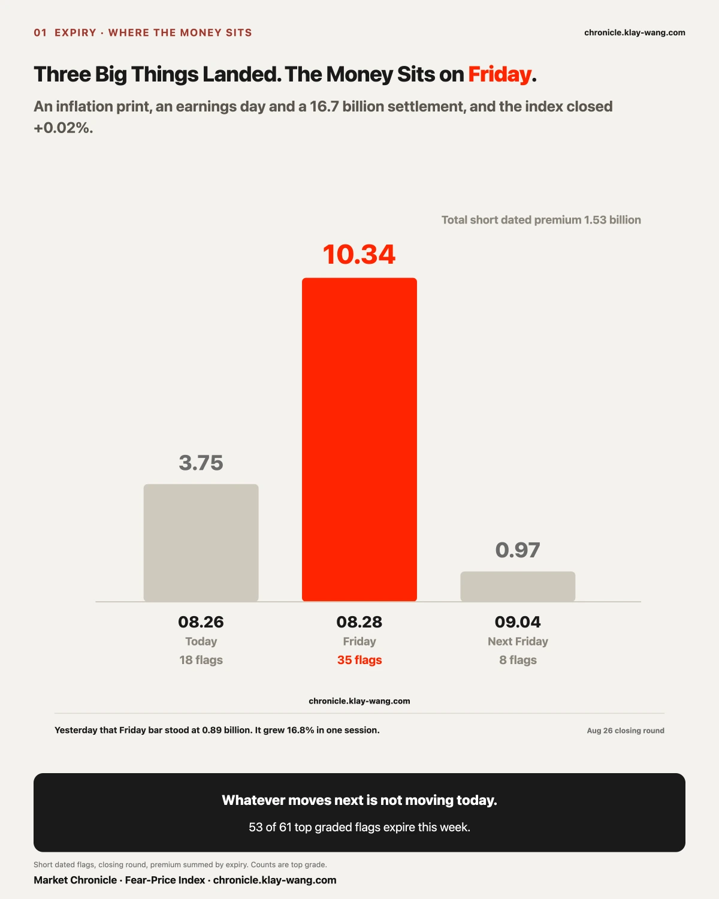
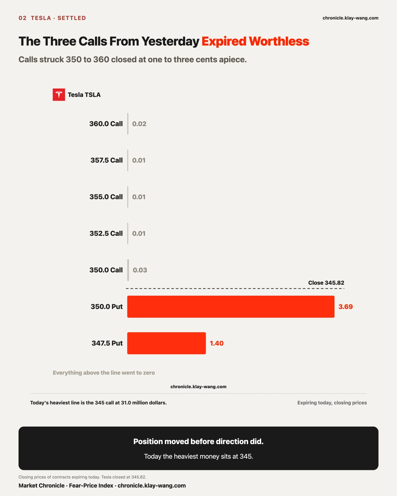
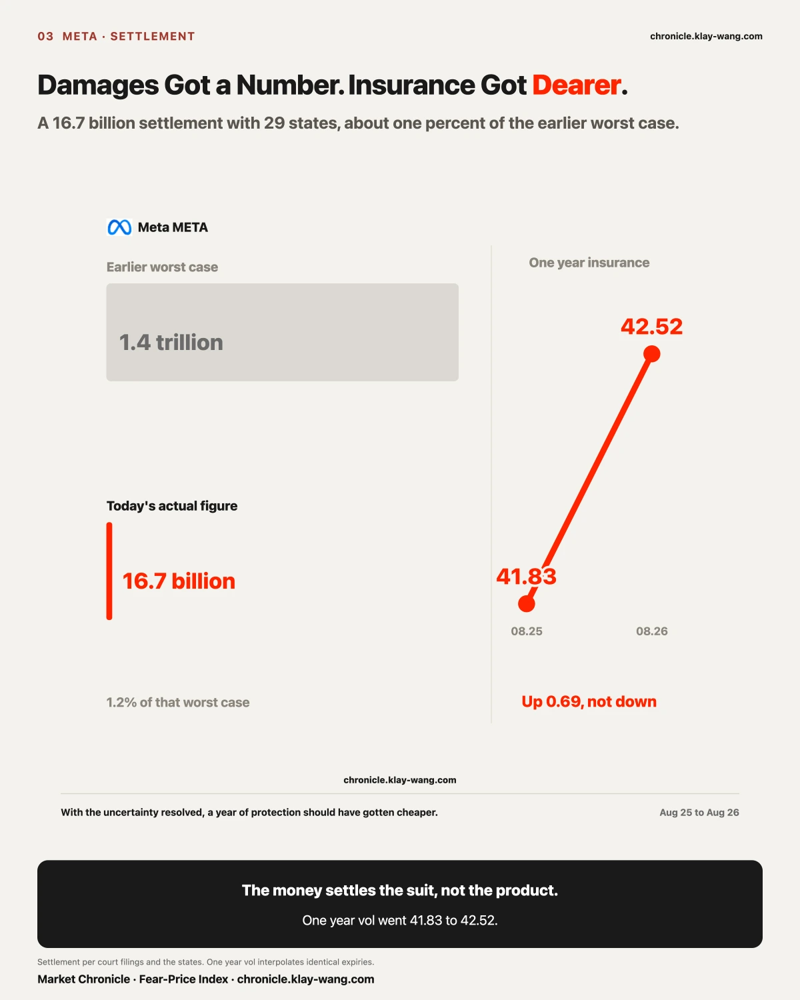
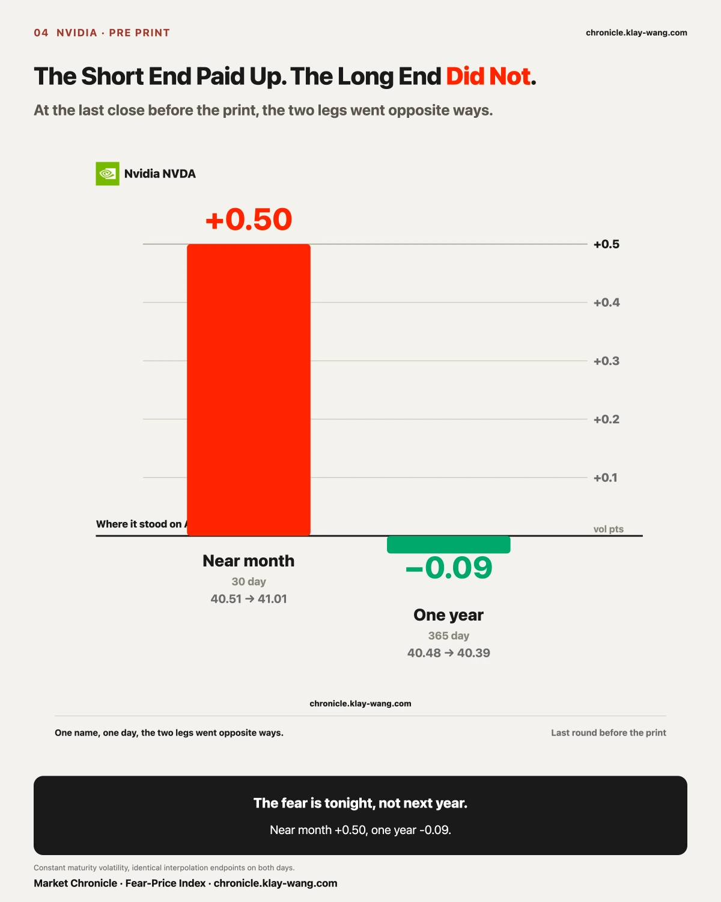
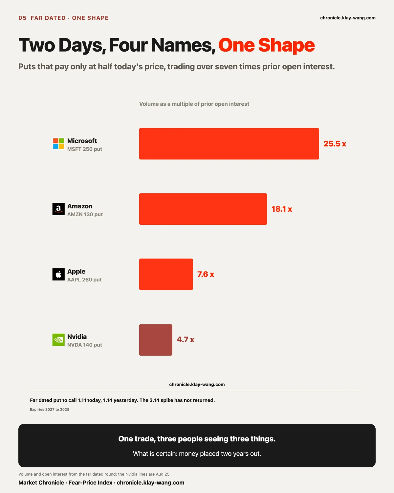
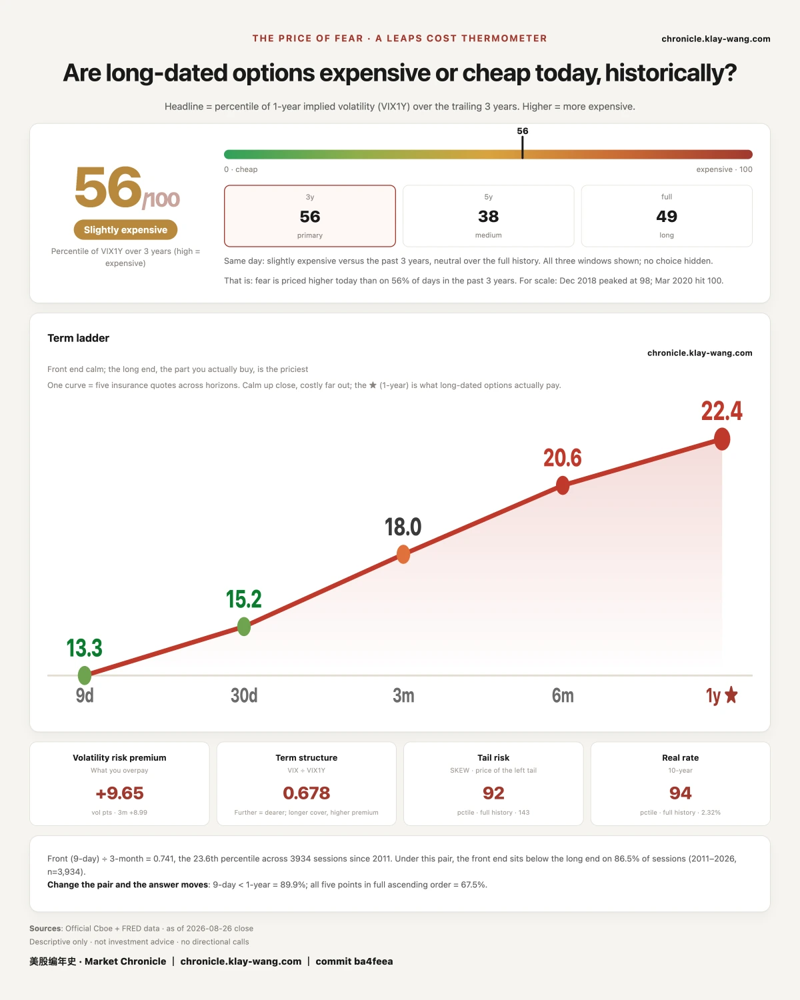

At 8:30 in the morning, July core PCE printed at 3.30% year over year, unchanged from the prior 3.30%. In the same batch, second quarter real GDP was revised to 1.5%, matching the initial read. At 4:20 in the afternoon, Nvidia reported. In between, Meta settled with 29 state attorneys general.
Three of them on one day. The market answered with +0.02% on the S&P fund and +0.09% on the Nasdaq one. Across eleven sector funds, the best was +1.09% and the worst −1.00%. Not one moved 1.1%. The price of fear closed at 15.21, down 1.55% from yesterday.
Across the seventeen names tracked here, eleven rose and six fell, from SanDisk at +1.26% to Nvidia at −1.59%, a spread of 2.85 points. On the day it reported, Nvidia was the weakest name in the market.
That inflation number deserves a line of its own, because two groups read it as two different things today. One set of forecasters expected a fall to 3.20%; another expected it to hold at 3.3%. The print was 3.30%. To the second group that is in line. To the first it is a decline that failed to arrive. Same number, opposite conclusion, depending on whose ruler you pick up. Over one month the pricing of a September hike ran from seventy percent to twenty five and back to forty, while this number has not moved a notch in two months.
What defines today is not the index. It is which day the money sits on. Premium on the near dated contracts totaled 1.5343 billion dollars, roughly level with yesterday's 1.519 billion. Split by expiry: 1.0337 billion on August 28, 0.3755 billion on today, and only 0.0969 billion left for September 4. Of 61 top graded flags, 53 expire this week.
Yesterday that August 28 figure was 0.8853 billion. On the last session before the print, the money on the day after tomorrow grew another 16.8%.

Yesterday's letter said Tesla had priced today as the most expensive day in the market: eight top graded contracts all expiring today, strikes from 350 to 360, five puts near 114 million dollars and three calls near 74 million, both sides bought. The read was that buying both sides pays for movement, and that the put side running half again heavier read as caution more than excitement.
Here is what those contracts were worth at the close: the 350 call 0.03, the 352.5 call 0.01, the 355 call 0.01, the 357.5 call 0.01, the 360 call 0.02. On the other side, the 347.5 put 1.40 and the 350 put 3.69.
All three call lines went to zero. The put side stayed in the money. Yesterday's caution was the right read at today's close.
What matters more is where the new money went. Tesla carried 269.7 million in premium today, the heaviest name in the market at 17.6% of the total. The single heaviest line is no longer 350. It is the 345 call, 218348 contracts, 31.005 million dollars, with the 342.5 call second at 10.589 million.
Yesterday the money sat between 350 and 360. Today it sits between 342.5 and 345. The price stepped down and the money stepped down with it. Nobody stayed to defend yesterday's level.
A correction to our own test, on the record. The test written here yesterday said that if the day's move exceeded the implied move, the buyers win. That was the wrong ruler. That implied move was quoted through August 28, three days out, not for a single session. A contract expiring the same day does not need it; the closing price is the answer. The conclusion holds on the close, but the test itself is logged as an error.

Meta settled with 29 state attorneys general today. The amount comes in three versions: court filings and the states say 16.7 billion dollars; Meta's own statement says approximately 18 billion, paid in annual installments over ten years; a 17.1 billion figure is also circulating. The gap is 1.3 billion. A nominal sum paid across ten years and a single headline figure were never the same number to begin with, and the public record does not reconcile them.
Another number was circulating this morning: 1.4 trillion, the ceiling in an earlier worst case estimate. Today's price for this thing is a little over one percent of that.
That is the news. Here is the options market on the same day.
Insurance on Meta a year out got more expensive today. One year volatility went from 41.83 to 42.52. The two readings interpolate between identical expiries, so the comparison is clean.
Stop on that for a second. What landed today was a tail risk: an open ended lawsuit with no ceiling turned into a number written on paper. By ordinary logic, with the uncertainty gone, protecting the next year should have gotten cheaper. It got dearer.
What the price says is this: the money settles the lawsuit, while the design changes in the agreement, daily time limits for minors, overnight blocks, stronger age assurance, parental tools, change the product itself. The damages have a figure. The product changes do not.
One more thing from the session, visible only if you open up the volume. The tape was quiet everywhere: the major names traded two or three tenths of their normal pace by midday. Meta traded one and two tenths, the only name in the market running heavy, and covered 561.88 to 593.34 intraday, a 5.52% span. On a day when no sector moved 1.1%, the market moved in exactly one name.
Meta carried 236.7 million in premium, third in the market. And what was bought: the heaviest lines intraday were out of the money calls expiring today and the day after, trading seven to eight times prior open interest, each line worth a few hundred thousand to a bit over a million dollars. Large in contracts, small in money. That is a bet on one afternoon. Repricing a company of that size does not look like this.

Nvidia carried 248.1 million in premium today, second at 16.2%. Yesterday it held 20.7%; the day before, 78.3%.
In the last round of pricing before the print, the two legs went opposite ways: thirty day volatility from 40.51 to 41.01, one year from 40.48 to 40.39.
The short end paid up for tonight and the long end stepped down by 0.09. Yesterday's line was that the market fears tomorrow night, not next year. At the last close before the print, it got written again.
The cash market gave a different answer: it closed at 209.66, down 1.59%, the weakest of the seventeen. Before the print, the market sold it first.
Two open questions from yesterday were settled at this morning's settlement.
Those two Alphabet legs dated March 2027, the 480 call and the 270 put, 5500 contracts each: yesterday it was not possible to say whether that was one structure or two independent trades. This morning: the 480 call's open interest went from 563 to 5844, the 270 put from 2751 to 7427, retaining 96.0% and 85.0% of yesterday's volume. Both legs moved in. The two legs traded identical volume yesterday and retained a difference of 605 contracts; whether those 605 were round trips or old positions closed, the trade record does not distinguish.
Nvidia's January 2027 460 call, 11.3 thousand contracts yesterday, more than the open interest standing there: this morning open interest went from 11626 to 18274, retaining 59.1%. Neither a return to the old level nor a full move in. Six tenths stayed, four tenths were round trips. When it lands in the middle, write the middle.

Yesterday's two Nvidia put lines, struck at half the share price, 218 thousand contracts, were confirmed this morning as nearly fully retained. Today the same shape shows up in three other names: Microsoft January 2028 250 puts, 67230 contracts against 2642 of open interest, 25.4 times; Amazon January 2028 130 puts, 12661 against 700, 18.1 times; Apple December 2028 260 puts, 15006 against 1973, 7.6 times.
Microsoft closed above 497 today. That put is struck at 250. All three strikes sit near half of their own share price, all expire between eighteen and thirty months out, and all traded more than seven times the open interest already standing there.
One trade, three people seeing three different things. Whoever hedges tails sees cheap far dated protection. Whoever trades spreads sees one leg of their own structure. Whoever sold these and took in the premium sees a liability that comes due a long way off. In the trade record, all three look identical.
Only one thing is certain: within two days, four of the largest companies in the market each had someone place money at a level two years out, in size far exceeding what was already sitting there. Tomorrow's settlement will say whether these moved in as well.
One question that comes up every time: was this one or two large tickets. A concentration test on the Friday lines: SanDisk 1500 calls disperse at 19.3%, its 1500 puts at 23.5%, Nvidia 210 calls at 16.4%. None of those is dominated by a handful of prints. Nvidia's 210 put line cannot be measured: the trade detail covers only 75.5% of it, and without the denominator there is no verdict.
For the record, the far dated put to call ratio printed 1.11 today against 1.14 yesterday. That 2.14 spike from the day before has not returned in two sessions. It was a single placement on the day after monthly expiration, not a continuing behavior.
Broadcom carried 25.13 million in premium today, 1.64% of the market, twelfth among the seventeen names. Yesterday it carried 16.69 million, 1.1%, also twelfth.
Its premium grew by half and its rank did not move. Both days cover the same set of expiries, so no ruler was switched. Everyone was adding; what it added was just enough to stay where it was.
The test written here yesterday: jump into the top five and that chip headline was merely slow to digest; stay outside the top ten and the market has finished pricing it. Today gives the second answer.
On the same day its term inversion widened again: thirty day volatility 3.17 points above one year, against 2.69 yesterday. Broken out, the near month added 0.37 and the one year gave up 0.11, half from each end.
A name can be both the weakest price and the one nobody is paying for. When those two arrive together, what the market is expressing is not disagreement. It is disinterest.
If you hold Tesla: yesterday's calls from 350 to 360 all expired worthless, and today's money sits at 342.5 to 345. The price stepped down and the payers stepped down with it. Position moved before direction did.
If you hold Meta: the damages got a number today, and insuring it a year out got more expensive. The lawsuit's account is closed. The product changes have no figure yet.
If you hold Nvidia or trade around its report: at the last close before the print, the short end paid up, the long end held still, and the money sits on the day after tomorrow rather than today. After the close the company reported 96.2 billion in quarterly revenue, guided the current quarter to 108 billion, and took the unusual step of guiding a full year ahead at roughly 70% growth against a consensus in the mid forties, all per public reports. Our own numbers stop at today's close. Whether the long end reprices on that is tomorrow's reading. We printed 40.39 here today.
If you hold nothing and are waiting: three large events landed on one day and the market did not move. On days like this, the informative thing is not the price. It is which day somebody paid for.

Today was an inflation print, an earnings day and the landing of a 16.7 billion dollar settlement, and not one of eleven sector funds moved 1.1%. Whatever is going to move is not moving today.
The three Tesla calls written here yesterday, struck 350 to 360, all expired worthless, the highest line worth one cent; today's heaviest new money sits at 345. Position moves before direction.
Meta's damages got a number today, and its one year insurance went from 41.83 to 42.52. The payment closes the lawsuit; the design changes in the agreement do not have a figure.
Fear-Price Index by Market Chronicle · Aug 26, 2026 · 56/100: one year volatility VIX1Y at 22.42, in the 56th percentile of the past three years. Higher means dearer. Daily ledger and methodology → chronicle.klay-wang.com · Attribution: Fear-Price Index · Market Chronicle
| 图位 | 中文段用 | 英文段用 |
|---|---|---|
| 图1 | 卡1_钱押在后天_纯中文 | 卡1_钱押在后天_EN |
| 图2 | 卡2_特斯拉的归零_纯中文 | 卡2_特斯拉的归零_EN |
| 图3 | 卡3_赔款与保险_纯中文 | 卡3_赔款与保险_EN |
| 图4 | 卡4_短端与长端_纯中文 | 卡4_短端与长端_EN |
| 图5 | 卡5_两天四只票_纯中文 | 卡5_两天四只票_EN |
| 图6 | 卡6_恐惧的标价_纯中文 | 卡6_恐惧的标价_纯英文 |